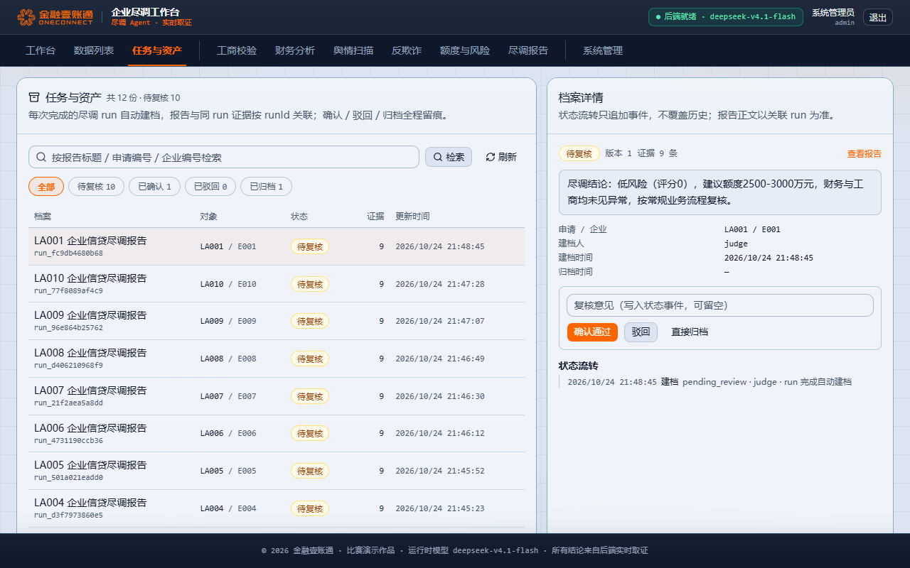

事实校验感知计算路径 P0 · 已修复
减少类措辞按负值比对；科目与金额之间有运算/测算措辞时按全部事实比对。LA003 与 dd-006 一次通过，同时保留对方向写反、编造数值、自算差值的拦截。
验证：12 个放行/拦截用例；两轮真实模型 0 次误拦
真实模型两轮复跑：准确率 100%、平均分 1.0000，评级与额度各 10/10，尽调结论与评分要点覆盖率均为 10/10；两轮逐题终态一致 16/16。事实校验不再误拦正确派生值，失败时可解释，会议与资产管理补上「任务 → 报告/证据档案 → 待复核 → 归档」闭环。
逐笔对照官方 公开测试集答案.csv 的风险评级、建议额度、尽调结论与评分要点覆盖。16 题 全部检查项通过；10 笔申请的风险评级与建议额度 各 10/10，尽调结论与评分要点覆盖率 各 10/10。LA003、LA006 的高风险一票否决按业务规则进入 待确认，不是失败。
| 题号 | 标准答案（评级 / 额度） | 终态 | 得分 | 检查 | 说明 |
|---|---|---|---|---|---|
| LA001 | 低风险 · 2500-3000 万 | succeeded | 1.00 | 7/7 | — |
| LA002 | 中风险 · 1200-1500 万 | succeeded | 1.00 | 7/7 | — |
| LA003 | 高风险 · 拒贷/极小额度 | needs_confirmation | 1.00 | 7/7 | 高风险 + 法人限高/未结逾期 → 待业务确认；评级、0 额度、结论与要点全部命中 |
| LA004 | 中风险 · 1500-2000 万 | succeeded | 1.00 | 7/7 | 摘要与财务判断列一致，69.4% 不再误写成预警 |
| LA005 | 低-中风险 · 600-800 万 | succeeded | 1.00 | 7/7 | 覆盖率 0.60 → 1.00；资产负债率 53.8%（修复二次舍入） |
| LA006 | 高风险 · 拒贷/极小额度 | needs_confirmation | 1.00 | 7/7 | 覆盖率 0.40 → 1.00；应收账款过高、现金流利润背离、拒贷建议显式成句 |
| LA007 | 低风险 · 400-500 万 | succeeded | 1.00 | 7/7 | — |
| LA008 | 中风险 · 1000-1200 万 | succeeded | 1.00 | 7/7 | — |
| LA009 | 低风险 · 2000-2500 万 | succeeded | 1.00 | 7/7 | — |
| LA010 | 中风险 · 1500-2000 万 | succeeded | 1.00 | 7/7 | 覆盖率 0.50 → 1.00；应收占比 44.5%（修复二次舍入），额度审慎与核查建议齐全 |
| 题号 | 终态 | 得分 | 检查 | 说明 |
|---|---|---|---|---|
| dd-001 | succeeded | 1.00 | 7/7 | 完整尽调报告 |
| dd-002 | succeeded | 1.00 | 4/4 | 单指标追问 |
| dd-003 | succeeded | 1.00 | 3/3 | 反欺诈信号 |
| dd-004 | needs_clarification | 1.00 | 4/4 | LA999 不存在，诚实澄清不编造 |
| dd-005 | needs_clarification | 1.00 | 2/2 | 指代不明，先问清对象 |
| dd-006 | succeeded | 1.00 | 4/4 | 额度测算追问；上轮误拦已修复 |
四项都按通用规则改：不写死题目答案、不按题号分支、运行时不读参考答案。评级与额度仍是评分卡和额度模型从事实现算。
按题目说明 6.1 的四项通用能力逐项核验：记忆、会议与资产管理、工具调用、Skill 管理。资产闭环本轮新增并现场走通，不再只是「有页面」。
GET/PATCH/DELETE /conversations/{id}/memory 支持实体槽位查看、纠正、清除（乐观锁 + 事件审计）；跨轮次复用，已确认结论只读展示。workspace_assets + 只追加状态事件；三端点支持检索、待办计数、确认/驳回/归档/重开；/workspace 页面可操作；追问与失败不建档，正文不复制、只指向 runId。@register_tool 注册表 + 场景白名单；参数 Pydantic 校验，失败结构化返回；工具结果落证据并进入后续结论；评测显示每笔 9 条证据、0 无证据结论。skillsApplied；改场景只改 YAML/Markdown。
以异常输入、失败路径、重复运行和数据口径检验「不崩溃、不编造、可解释」。本轮 16 题 0 失败，护栏不再误伤真实结论。
needs_clarification 并说明缺什么，不编造结论。narrative_check_failed 现在附风险评级、建议额度、命中规则、证据条数与失败原因；未通过校验的正文仍撤下，不发布未核实数字。degraded 并转人工复核；单角色失败不拖垮整图。对照红线清单逐项核验，代码、评测与新增资产模块均已扫描。
deepseek-v4.1-flash，全部经 llm.py，无框架自带 ChatModel。POST /api/agent/runs 现场重算 LA001，18.0s 得到低风险 / 2500-3000 万元 / 9 条证据，与标准一致，非预录。| 指标 | 上一轮（eea0d32 · 80 分） | 本轮（9ecfefa） | 变化 |
|---|---|---|---|
| 风险评级命中 | 9/10 | 10/10 | ↑ 1 |
| 建议额度命中 | 9/10 | 10/10 | ↑ 1 |
| 结论 / 要点覆盖率 | 60% / 40% / 50% | 10/10 笔全过 | ↑ 全部过阈 |
| 终态分布（16 题） | 2 失败 · 2 待确认 | 0 失败 · 2 待确认 · 2 澄清 | ↓ 失败清零 |
| 事实校验误拦 | LA003 / dd-006 | 0 | ↓ 修复 |
| 准确率 / 平均分 | 68.75% / 0.8973 | 100% / 1.0000 | ↑ 100% |
| 单笔平均耗时 | 18.1 s | 16.8 s | ↑ 改善 7% |
| 会议与资产管理 | 未闭环（扣 12 分） | 建档/检索/状态/归档闭环 | ↑ 补齐 |
| 综合评分（AI 自估） | 80 | 97 | ↑ 17 |
减少类措辞按负值比对；科目与金额之间有运算/测算措辞时按全部事实比对。LA003 与 dd-006 一次通过，同时保留对方向写反、编造数值、自算差值的拦截。
按阈值与规则命中生成标准风险术语（资产负债率过高、应收账款过高、其他应收款异常偏高、营收现金流背离、现金流与利润背离、逾期与逾期担保、法人限高、舆情负面、涉诉及被执行、关联担保圈、额度审慎、拒贷建议），报告逐条照抄，不按题号写答案。
narrative_check_failed 附带可核验中间结果与失败原因，不再只有一个错误码；未通过校验的正文仍不发布。
迁移 12 + 服务 + 三端点 + /workspace 页面；完整报告自动建档，待复核即待办，确认/驳回/归档/重开只追加事件并带版本锁；7 条用例覆盖幂等、检索、流转、冲突。
比率 6 位小数 + display，消除二次舍入；事实校验重写 1→2 次；Windows GBK 控制台不再崩溃；MySQL 增加连接/读写超时，网络中断不无限挂起。
| 项 | 命令 / 位置 | 本轮结果 |
|---|---|---|
| 公开集评测 | python -m eval.run --input eval/datasets/public_sample.jsonl --fresh | 16 题 100%；归档 docs/10-strategy/复评证据-20261024/，本机输出 eval/output/judge-final-2/ |
| 全量测试 | python -m pytest tests -q | 512 passed / 1 skipped |
| 前端 | npm run lint && npm run typecheck && npm run build | 0 warning / 通过 / 通过 |
| 红线扫描 | python .agents/skills/redline-scan/scripts/scan.py | ERROR 0 / WARN 3（seed 注释） |
| 业务复核 | python -m eval.dd04_review prepare … | 591 个表格单元格 0 不符 |
| 现场重算 | POST /api/agent/runs（LA001） | 低风险 / 2500-3000 万 / 9 证据 / 18.0s |
复现边界：结果来自本机真实模型与云 MySQL；公开集答案仅用于离线评分，运行时未读取。非公开集、Windows 干净机、业务人员签字仍未覆盖，不能把本报告当作官方得分或提交资格证明。